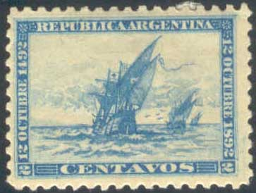
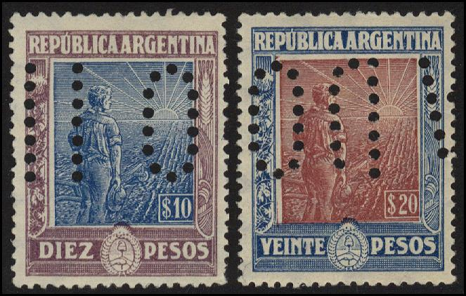
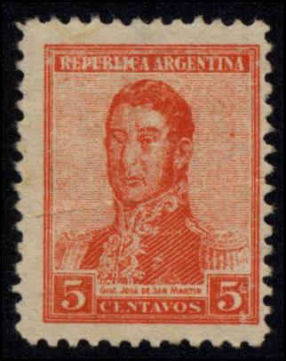

(Forgeries of these stamps)
Return To Catalogue - Argentine 1858-1863 - Argentine 1864-1891 - Argentine miscellaneous - Corrientes - Buenos Aires
Note: on my website many of the
pictures can not be seen! They are of course present in the
catalogue;
contact me if you want to purchase it.
For stamps of Argentine issued before 1892 click here.

2 c blue 5 c blue
For the specialist: these stamps have watermark 'sun' and perforation 11 1/2.
Value of the stamps |
|||
vc = very common c = common * = not so common ** = uncommon |
*** = very uncommon R = rare RR = very rare RRR = extremely rare |
||
| Value | Unused | Used | Remarks |
| 2 c | ** | ** | |
| 5 c | ** | ** | |
(Forgeries of these stamps)
I've been told that these forgeries originate from Italy. The forger Fournier offered forgeries of these stamps (the 2 values for 1 swiss franc) in his 1914 Price list of philatelic forgeries. I do not know if the above forgeries are Fournier forgeries. Genuine stamps have a 'sun with rays' watermark, the forgeries have an impressed watermark. There should be a small accent above the 'U' of 'REPUBLICA' and a horizontal crossbar in the 'G' of 'ARGENTINA' (according to 'Focus on forgeries').
On the website http://columbus-on-stamps.8m.com/0242-argentina3.htm some more differences can be found (base on Guzman, Luiz A. "Commemoration of the Fourth Centenary of the Discovery of America in stamps issued by Argentina". Discovery no.30 April 1990):
The genuine stamps have (obtained from the above mentionned website):
1. The A of Republica and the first A of ARGENTINA are
joined at the bottom.
2. The right part of the N of ARGENTINA is shorter.
3. The second N and the second A of ARGENTINA are joined at the
bottom on the two centavos stamp only.
4. R and E of 12 OCTUBRE 1892 are joined at the bottom.
5. The three horizontal lines at the left of centavos are one at
the left but have three points at the right.
6. The upper part of the T of CENTAVOS ends in two triangles.
7. The flag cross has three arms.
8. Topmast is bent to the left.
9. Ship's helm is straight and long.
10. There are seven birds flying between the first and second
ships.
The forged stamps have (also obtained from the above mentionned website):
1. The A of Republica and the first A of ARGENTINA are
separated at the bottom.
2. The right part of the N of ARGENTINA is normal.
3. The second N and the second A of ARGENTINA are separated at
the bottom on the two centavos stamp only.
4. R and E of 12 OCTUBRE 1892 are NOT joined at the bottom.
5. The three horizontal lines at the left of centavos, only the
top one has points and lacks the vertical line on the left on the
two centavos only.
6. The T of CENTAVOS at top is not complete.
7. The flag's cross has three arms.
8. Topmast at right is wide.
9. Ship's helm is short and narrow at the end.
10. There are six birds flying between the first and second
ships, the five centavos has five birds.
Rivadiva

1/2 c blue 1 c brown 2 c green 3 c orange 5 c red
I've seen postal stationary in this design as well: 1/2 c blue, 1 c brown, 2 c green and 5 c red.
Value of the stamps |
|||
vc = very common c = common * = not so common ** = uncommon |
*** = very uncommon R = rare RR = very rare RRR = extremely rare |
||
| Value | Unused | Used | Remarks |
| 1/2 c | c | c | |
| 1 c | * | c | |
| 2 c | * | c | |
| 3 c | * | c | |
| 5 c | ** | vc | |
Belgrano


10 c red 12 c blue 16 c black 24 c brown 30 c orange 50 c green 80 c violet
Value of the stamps |
|||
vc = very common c = common * = not so common ** = uncommon |
*** = very uncommon R = rare RR = very rare RRR = extremely rare |
||
| Value | Unused | Used | Remarks |
| 10 c | *** | c | |
| 12 c | *** | c | |
| 16 c | *** | * | |
| 24 c | *** | * | |
| 30 c | *** | * | |
| 50 c | *** | * | |
| 80 c | *** | *** | |
San Martin


1 P red 1 P 20 c black 2 P green 5 P blue
Value of the stamps |
|||
vc = very common c = common * = not so common ** = uncommon |
*** = very uncommon R = rare RR = very rare RRR = extremely rare |
||
| Value | Unused | Used | Remarks |
| 1 P | *** | ** | |
| 1 P 20 c | R | *** | |
| 2 P | R | *** | |
| 5 P | RR | *** | |
For the specialist: these stamps have watermark 'sun'. An erroneous stamp 5 c in the colour green seems to exist (RRR).
I've seen imperforate proofs of many values in different colors. Also perforated proofs with overprint "MUESTRA".
Proofs
Postal stationery in the 2 c green design (reduced size)
1/2 c brown 1 c green 2 c black 3 c orange (1900) 4 c yellow (1903) 5 c red 6 c black (1900) 10 c green 12 c blue 12 c green (1900) 15 c grey (1900) 16 c orange 20 c red 24 c violet 30 c red 50 c blue Larger size
1 P blue and black 5 P orange and black 10 P green and black 20 P red and black
For the specialist: these stamps have watermark 'sun'. The values 1 P to 20 P exists with inverted centers (RRR).
Value of the stamps |
|||
vc = very common c = common * = not so common ** = uncommon |
*** = very uncommon R = rare RR = very rare RRR = extremely rare |
||
| Value | Unused | Used | Remarks |
| 1/2 c | c | c | |
| 1 c | * | c | |
| 2 c | * | c | |
| 3 c | * | c | |
| 4 c | ** | * | |
| 5 c | * | vc | |
| 6 c | * | * | |
| 10 c | * | c | |
| 12 c blue | *** | * | |
| 12 c green | *** | * | |
| 15 c | *** | c | |
| 16 c | R | R | |
| 20 c | *** | * | |
| 24 c | *** | ** | |
| 30 c | *** | * | Two shades of red were issued |
| 50 c | *** | * | |
| 1 P | *** | * | |
| 5 P | RR | *** | Fiscally used: * |
| 10 P | RR | R | Fiscally used: * |
| 20 P | RR | RR | Fiscally used: * |

5 c blue
For the specialist: this stamp has watermark 'sun'.
Value of the stamps |
|||
vc = very common c = common * = not so common ** = uncommon |
*** = very uncommon R = rare RR = very rare RRR = extremely rare |
||
| Value | Unused | Used | Remarks |
| 5 c | *** | ** | |
1/2 c violet 1 c brown 2 c brown 3 c green 4 c lilac 5 c red 6 c yellow 10 c green 12 c orange 12 c blue 15 c green 20 c blue 24 c brown 30 c red 50 c black Larger size

1 P blue and red
For the specialist: these stamps have watermark 'sun'. Unwatermarked stamps are known coming from the borders of the sheets.
Value of the stamps |
|||
vc = very common c = common * = not so common ** = uncommon |
*** = very uncommon R = rare RR = very rare RRR = extremely rare |
||
| Value | Unused | Used | Remarks |
| 1/2 c | c | c | |
| 1 c | c | c | |
| 2 c | * | vc | |
| 3 c | * | * | |
| 4 c | * | * | |
| 5 c | * | vc | |
| 6 c | * | * | |
| 10 c | * | c | |
| 12 c orange | ** | ** | |
| 12 c blue | * | c | |
| 15 c | ** | * | Seems to exist without text 'SAN MARTIN': *** |
| 20 c | ** | * | |
| 24 c | *** | ** | |
| 30 c | *** | * | |
| 50 c | *** | * | |
| 1 P | *** | ** | |


1/2 cx grey and blue 1 c green and black 2 c olive and black 3 c green 4 c blue and green 5 c red 10 c brown and black 12 c blue 20 c brown and black 24 c brown and black 30 c lilac and black 50 c red and black 1 P bleu and dark blue 5 P orange and violet 10 P orange and black 20 P blue and black
For the specialist: these stamps have watermark 'sun'. Unwatermarked stamps exist (RR). Stamps with inverted center are extremely rare (RRR). The perforation is 11 1/2.
Value of the stamps |
|||
vc = very common c = common * = not so common ** = uncommon |
*** = very uncommon R = rare RR = very rare RRR = extremely rare |
||
| Value | Unused | Used | Remarks |
| 1/2 c | c | c | |
| 1 c | c | c | |
| 2 c | * | c | |
| 3 c | * | * | |
| 4 c | * | * | |
| 5 c | * | vc | |
| 10 c | * | * | |
| 12 c | * | c | |
| 20 c | ** | ** | |
| 24 c | ** | ** | |
| 30 c | ** | ** | |
| 50 c | *** | *** | |
| 1 P | *** | *** | |
| 5 P | RR | RR | |
| 10 P | RR | RR | |
| 20 P | RRR | RRR | |

Sperati forgeries and forged cancels of Argentine, blackprints,
showing a forgery of the 20 P value.
Sperati made forgeries of the 10 P (I've never seen it) and the 20 P values. The Sperati forgeries are lithographed (genuine stamps are engraved). Sperati used genuine cancels (by bleaching out the design of a genuine stamp and reprinting his forged design on it).
Sperati forgery. There should be a dot in the left top hand side
in the genuine stamps, which is missing in these forgeries.
(Sorry, no picture available. If anybody has an image, please contact me!)
5 c brown and black
For the specialist: this stamp has watermark 'sun' and perforation 13 1/2.
Value of the stamps |
|||
vc = very common c = common * = not so common ** = uncommon |
*** = very uncommon R = rare RR = very rare RRR = extremely rare |
||
| Value | Unused | Used | Remarks |
| 5 c | * | * | |

1/2 c violet 1 c yellow 2 c brown 3 c green 4 c lilac 5 c orange (red) 10 c green 12 c blue 20 c blue 24 c brown 30 c red 50 c black Larger size

Larger size, with perfins
1 P blue and red 5 P black and green 10 P lilac and blue 20 P blue and brown
For the specialist: these stamps have watermark 'sun' or 'beehives' (the values 1 c, 2 c and 5 c also exist without watermark). The 5 c and 12 c exist in slightly larger size.
Value of the stamps |
|||
vc = very common c = common * = not so common ** = uncommon |
*** = very uncommon R = rare RR = very rare RRR = extremely rare |
||
| Value | Unused | Used | Remarks |
Cheapest types |
|||
| 1/2 c | c | c | |
| 1 c | c | c | |
| 2 c | * | vc | |
| 3 c | * | c | |
| 4 c | * | vc | |
| 5 c | * | vc | |
| 10 c | * | c | |
| 12 c | * | c | |
| 20 c | ** | * | |
| 24 c | *** | ** | |
| 30 c | *** | * | |
| 50 c | *** | * | |
| 1 P | *** | ** | |
| 5 P | RR | R | |
| 10 P | RR | RR | |
| 20 P | RRR | RRR | |
I have seen an envelope with a similar image as the above stamps (12 c blue). I have also seen a wrapper 2 c brown with text: "FAJA POSTAL IMPRESOS" in the above design.
Several overprints exist on these stamps. They consist of two or three letters and were used by several ministries of the Argentine government, examples:


("M.I" and "M.R.C." overprint)
The following letters exist: "M.A." (ministry of agriculture), "M.G." (ministry of war), "M.H." (treasury), "M.I." (ministry of internal affairs), "M.J.I." (ministry of justice), "M.M." (navy), "M.O.P" (ministry of public works) and "M.R.C." (ministry of foreign affairs).


1/2 c violet 1 c yellow 2 c brown 3 c green 4 c lilac 5 c orange 10 c green 12 c blue 20 c blue 24 c brown 30 c red 50 c black 1 P blue and red 5 P black and green 10 P lilac and blue 20 P blue and lilac
These stamps have watermark 'beehives', various perforations exist.
Value of the stamps |
|||
vc = very common c = common * = not so common ** = uncommon |
*** = very uncommon R = rare RR = very rare RRR = extremely rare |
||
| Value | Unused | Used | Remarks |
| 1/2 c | c | c | |
| 1 c | * | * | |
| 2 c | * | c | |
| 3 c | * | * | |
| 4 c | * | * | |
| 5 c | * | vc | |
| 10 c | ** | * | |
| 12 c | ** | * | |
| 20 c | *** | ** | |
| 24 c | *** | *** | |
| 30 c | *** | * | |
| 50 c | *** | *** | |
| 1 P | R | *** | |
| 5 P | RR | RR | |
| 10 P | RR | RR | |
| 20 P | RRR | RRR | |
Similar overprints as for the 1911 issue exist, issued for several ministries.

(Reduced size, with watermark 'beehives' visible on top)
1/2 c violet 1 c yellow 2 c brown 3 c green 4 c lilac 5 c orange 10 c green Larger size 12 c blue 20 c blue 24 c brown 30 c red 50 c black 1 P blue and red 5 P black and green 10 P lilac and blue 20 P blue and lilac
These stamps were issued with watermark 'beehives' (1917, all values), without any watermark (1918, 1/2 c to 50 c) and with watermark 'multiple suns' (three types, 1920-22: 1/2 c to 50 c).
Value of the stamps |
|||
vc = very common c = common * = not so common ** = uncommon |
*** = very uncommon R = rare RR = very rare RRR = extremely rare |
||
| Value | Unused | Used | Remarks |
| 1/2 c | c | c | |
| 1 c | * | vc | |
| 2 c | * | vc | |
| 3 c | * | c | |
| 4 c | * | c | |
| 5 c | * | vc | |
| 10 c | ** | c | |
| 12 c | ** | c | |
| 20 c | *** | c | |
| 24 c | *** | * | |
| 30 c | *** | * | |
| 50 c | *** | * | |
| 1 P | *** | * | |
| 5 P | RR | *** | |
| 10 P | RR | RR | |
| 20 P | RR | RR | |
Similar overprints as for the 1911 issue exist, issued for several ministries.
A postal forgery exists of the 5 c value.

I've been told that this is such a postal forgery, I have no
further information.

5 c brown and black
Value of the stamps |
|||
vc = very common c = common * = not so common ** = uncommon |
*** = very uncommon R = rare RR = very rare RRR = extremely rare |
||
| Value | Unused | Used | Remarks |
| 5 c | * | * | |
The next stamps to be issued in Argentina were three stamps in 1920 commemorating General Belgrano.
{kind=link}
{kind=link}
{kind=link}